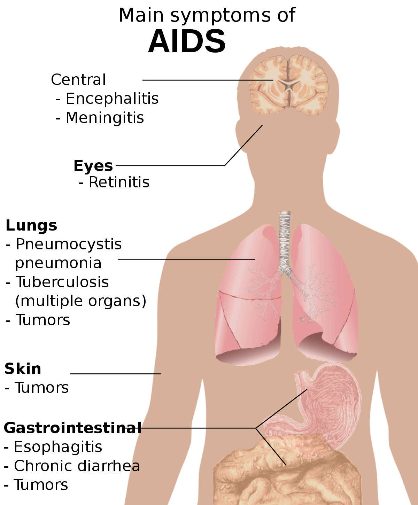
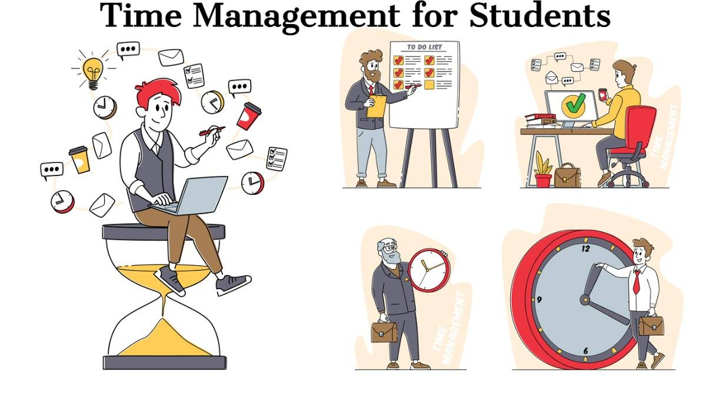

Our Services
Types of Services
- Individual Counseling: Our individual therapy sessions provide a safe and confidential space for you to explore your thoughts and feelings with a licensed therapist. This service is tailored to address your specific concerns and help you achieve personal growth.
- Group Counseling: Group therapy sessions offer the opportunity to connect with others who are experiencing similar challenges. Guided by a therapist, these sessions can provide support, new perspectives, and a sense of community.
- Theme-centered workshops: These workshops are dedicated to work on covering a range of topics such as anxiety, stress, depression, PTSD, and other mental health related issues that effect people in everyday life.
- Housing Referral: Housing referrals are posted on the bulletin board outside 0203 James Hall. Apartments, furnished rooms, and shares are available in the college neighborhood. If housing needs are due to personal or family problems, come in to speak with a counselor.
- Drug and Alochol Counseling: Drug and alcohol counseling is available for all members of the college community who have drug or alcohol-related problems or who are affected by the substance use of friends or family members.
- Video showings and discussion groups: Workshops, video showings, and discussion groups led by professionals at the center are offered each semester. They are listed in a calendar, advertised in the campus papers, and announced on hallway bulletin boards outside the center. Topics of previous workshops include: Academic Achievement, Assertiveness, Families of Alcoholics, Procrastination, Self Growth, Stress Reduction, Test Anxiety, and Time Management.
Free Information Handouts
- AIDS 
- Depression
- Drugs and Alochol
- Eating Disorders
- How to Study
- How to take Tests
- Sleep Problems
- Stress Management
- Time Management "
Information
- CDC HIV/AIDS
- AIDS.gov
- NIHM Depression
- SAMHSA
- NIDA
- Brooklyn College Learning Center
- National Sleeping Foundation
- Sleep Education
- APA Stress Management
- Time Management Skills